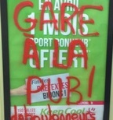

| |
Site dédié à la publication d'informations communiquées par le Collectif des déboulonneurs. En aucun cas ce site n'appelle à des actions illégales. | |
 |
||
|
Accueil du site > Lille > [Lille] Une déboulonneuse en GAV
Lundi 25 avril, à 19h30, une vingtaine de militants antipub se sont retrouvés à Lille, place des Buisses. Leur cible était le couloir entre la gare Lille Flandres et la salle d’échanges de métro. Emprunté quotidiennement par des milliers de citoyens, ce lieu est bordé d’une vingtaine de panneaux qui réalisent un véritable matraquage publicitaire. Ces panneaux véhiculent des messages dangereux : violence, sexisme, surconsommation de biens et d’alcool... Les déboulonneurs ont recouvert 17 de ces panneaux par des affiches avec des messages invitant à la réflexion tels que « la pub nuit même le jour » ou « métro/boulot/conso ». De plus, de manière symbolique, non-violente et assumée, une militante a barbouillé « Gare à la pub » sur l’un de ces panneaux. 
Vers 20 heures, les forces de l’ordre ont interpellé les militants. Ils ont procédé à des relevés d’identité de cinq d’entre eux qui ont été laissés en liberté, et ont conduit au commissariat central de Lille la déboulonneuse qui avait barbouillé. Cette déboulonneuse a refusé de se soumettre à un prélèvement d’ADN, considérant que les informations génétiques sont des données personnelles ne devant pas servir à ficher les citoyens et en particulier les militants non-violents. Dans la soirée, la déboulonneuse, Marion, a été placée en garde à vue. Elle est sortie mardi à 10h30 avec une convocation pour le 11 octobre. Les déboulonneurs assument leurs actes et restent déterminés à lutter conter l’invasion publicitaire et les messages qu’elle véhicule. Photos de l’action www.twitter.com/deboulille deboulonneurs_lille[a]no-log.org
|
|
Site utilisant SPIP - Hébergement Ouvaton
|